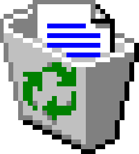

RESUME ABOUT MEEDUCATION PROJECTS GITHUB

RECYLE BIN
Resume
Education
University of Texas at Arlington
Degree: Bachelor of Science in Software Engineering
Expected Graduation: May 2026
Relevant Coursework: Operating Systems, Data Structures, Algorithms, Fundementals of Software Engineering
GPA: 3.1/4.0
Extracurricular: National Society of Black Engineers, Video Game Developers Organization, Institute of Industrial and
Systems Engineers Student Chapter
Designed and developed a dynamic word search game supporting up to 4 players
Built with Java, JavaScript, GJSON, HTML, and CSS.
Enhanced skills in full-stack development, real-time system design, and collaborative software development.
Used GitHub for version control and collaboration, adhering to Agile development practices.
Implemented server-side logic with JSON to synchronize game states and updates across players in real time.
Built a chat feature that broadcasted messages to all players using JSON for communication.
Maverick Operating System
Technologies Used: C, Kernel Programming, Process Management, System Calls, Linux Environment, Debugging Tools
Designed and implemented a custom shell capable of executing user commands with features such as process monitoring and custom priority scheduling.
Developed system calls (getpinfo, setPriority) in a Linux-like kernel, utilizing process control blocks (PCB) for tracking process attributes such as PID, priority, and execution ticks.
Utilized low-level C programming to interact with kernel structures and handle user space to kernel space communication securely.
Gained experience with concurrency and process synchronization, using locking mechanisms to ensure safe access to shared resources.
Built a variant of the ps command to display running processes and their statistics by interfacing with the custom kernel system calls.
Debugged and tested using gdb, ensuring memory safety and performance optimization.
About Me
Hi there! I'm Edosa Justice Aigbuza, a Software Engineering student at the
University of Texas at Arlington with a passion for building innovative and
user-centric solutions. My journey combines my curiosity for automation and intelligent systems,
a growing interest in art and design, and a dedication to honing my skills in
frontend development, UI/UX design, and machine learning.
I have experience working on diverse projects, including:
Multiplayer Word Search Game: Developed with Java, JavaScript, HTML, and CSS, this project included
real-time updates, a leaderboard, and a chat system—showcasing my ability to integrate creativity with technical rigor.
React-based Applications: Crafting seamless user interfaces while integrating cutting-edge technologies
like machine learning.
Currently, I’m pursuing opportunities in UI/UX design and frontend development,
actively applying my learnings from courses, projects, and internships to enhance my craft. Alongside, I’m updating my
portfolio website to reflect my journey and aspirations.
Beyond coding, I’m a big fan of gaming, especially playing Apex Legends and exploring
indie games. I also enjoy thrifting for unique finds and delving into thought-provoking
stories like Aristotle and Dante Discover the Secrets of the Universe.
Feel free to reach out if you'd like to collaborate or chat about technology, art, or even gaming and books.
Let’s create something amazing together!